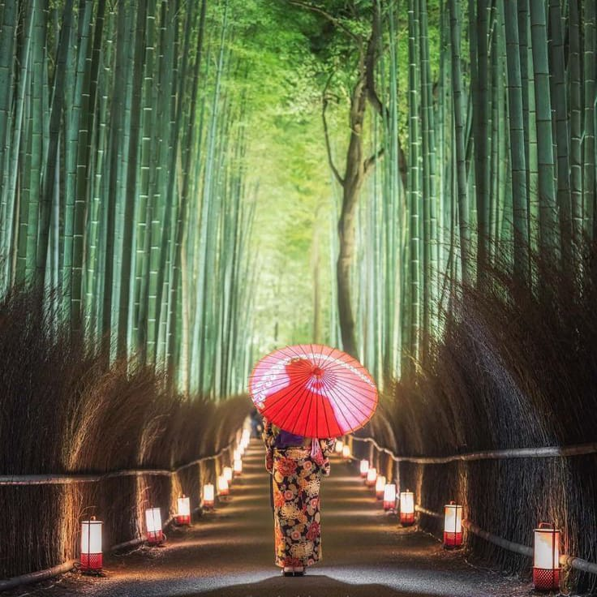

Arashiyama Bamboo Grove

Arashiyama Bamboo Grove adalah sebuah hutan bambu alami di Arashiyama, Kyoto, Jepang. Hutan ini sebagian besar terdiri dari Bambu Moso (Phyllostachys edulis).
Hutan Bambu Arashiyama adalah salah satu tempat wisata paling populer di Kyoto. Hutan ini sangat indah, dengan batang bambu yang menjulang tinggi dan dedaunan hijau yang lebat. Pengunjung dapat berjalan-jalan di jalur hutan atau bersepeda melalui hutan. Hutan ini juga merupakan tempat yang populer untuk fotografi.